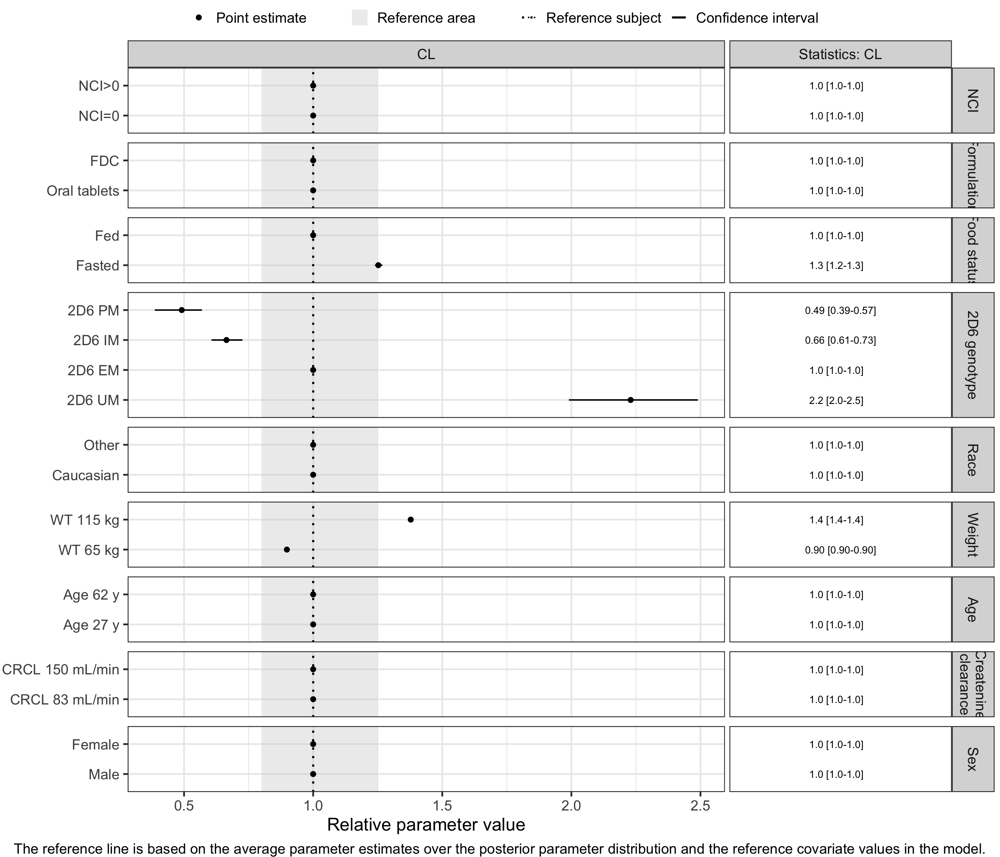
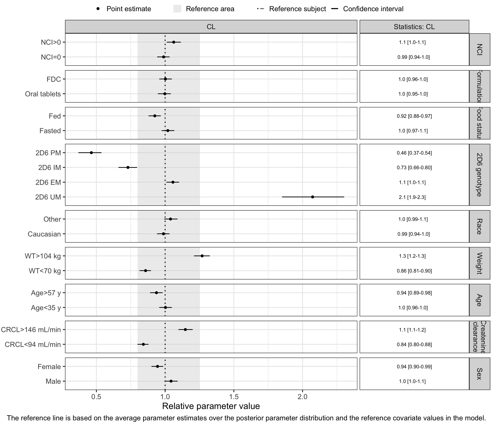

Creating Forest plots for NONMEM models
Creating_Forest_plots_for_NONMEM_models.Rmd
suppressPackageStartupMessages(library("PMXForest",character.only = TRUE))
suppressPackageStartupMessages(library(dplyr))
suppressPackageStartupMessages(library(ggplot2))
theme_set(theme_bw(base_size=18))
theme_update(plot.title = element_text(hjust = 0.5))
set.seed(865765)Introduction
This vignette goes through the steps involved in creating Forest plots from NONMEM models and PsN output.
The example used is a PK model with covariates added using the SCM as implemented in PsN. This means that the model only contain covariates that fulfill defined significance criteria. In contrast, models based on the Full Covariate Model (FCM) approach includes covariates without requiring statistical significance. From a Forest plot perspective, the main difference is that by Forest plots based on SCM models will have covariates without any “signal”. However, it is possible to use the data in the analysis data set to explore the impact of all covariates, irrespective if they are included in the model or not, so called empirical Forest plots. To separate the two types of Forest plots the first type, the one that relies on model predictions and not the data, is referred to as parametric Forest plots.
The steps involved in creating the two types of Forest plots are quite similar.
Overview of the steps involved in creating Forest plots
The creation of Forest plots using the PMXForest package follows a number of well defined steps:
- Define the covariates/covariate groups (i.e. combination of covariates) to include in the plot.
- Define the function that compute the covariate effects on the parameters.
- Get the NONMEM/PsN information and sample parameter vectors to illustrate parameter uncertainty.
- Compute the data for the Forest plot.
- Create the Forest plot.
These steps will first be demonstrated for parametric Forest plots. The same steps will then be shown for empirical Forest plots.
Parametric Forest plots
Define the covariates/covariate groups to include in the plot.
The createInputForestData can be used to set up the required covariate structure. Each row in the resulting data.frame corresponds to one row in the Forest plot. The covariate effect displayed on a specific row in the Forest plot will be a function of the covariate values on the corresponding row in the ´data.frame`.
dfCovs <- createInputForestData(
list("NCIL" = c(0,1),
"FORM" = c(0,1),
"FOOD" = c(0,1),
"GENO"=list("GENO1" = c(1,0,0,0),
"GENO3" = c(0,0,1,0),
"GENO4" = c(0,0,0,1)),
"RACEL2"= c(0,1),
"WT" = c(65,115),
"AGE" = c(27,62),
"CRCL" = c(83,150),
"SEX" = c(1,2)),
iMiss=-99)
dfCovs
#> NCIL FORM FOOD GENO1 GENO3 GENO4 RACEL2 WT AGE CRCL SEX COVARIATEGROUPS
#> 1 0 -99 -99 -99 -99 -99 -99 -99 -99 -99 -99 NCIL
#> 2 1 -99 -99 -99 -99 -99 -99 -99 -99 -99 -99 NCIL
#> 3 -99 0 -99 -99 -99 -99 -99 -99 -99 -99 -99 FORM
#> 4 -99 1 -99 -99 -99 -99 -99 -99 -99 -99 -99 FORM
#> 5 -99 -99 0 -99 -99 -99 -99 -99 -99 -99 -99 FOOD
#> 6 -99 -99 1 -99 -99 -99 -99 -99 -99 -99 -99 FOOD
#> 7 -99 -99 -99 1 0 0 -99 -99 -99 -99 -99 GENO
#> 8 -99 -99 -99 0 0 0 -99 -99 -99 -99 -99 GENO
#> 9 -99 -99 -99 0 1 0 -99 -99 -99 -99 -99 GENO
#> 10 -99 -99 -99 0 0 1 -99 -99 -99 -99 -99 GENO
#> 11 -99 -99 -99 -99 -99 -99 0 -99 -99 -99 -99 RACEL2
#> 12 -99 -99 -99 -99 -99 -99 1 -99 -99 -99 -99 RACEL2
#> 13 -99 -99 -99 -99 -99 -99 -99 65 -99 -99 -99 WT
#> 14 -99 -99 -99 -99 -99 -99 -99 115 -99 -99 -99 WT
#> 15 -99 -99 -99 -99 -99 -99 -99 -99 27 -99 -99 AGE
#> 16 -99 -99 -99 -99 -99 -99 -99 -99 62 -99 -99 AGE
#> 17 -99 -99 -99 -99 -99 -99 -99 -99 -99 83 -99 CRCL
#> 18 -99 -99 -99 -99 -99 -99 -99 -99 -99 150 -99 CRCL
#> 19 -99 -99 -99 -99 -99 -99 -99 -99 -99 -99 1 SEX
#> 20 -99 -99 -99 -99 -99 -99 -99 -99 -99 -99 2 SEXIt is useful to create a vector of informative names for the rows in dfCovs. This will be used in a later step.
covnames <- c("NCI=0","NCI>0","Oral tablets","FDC","Fasted","Fed","2D6 UM","2D6 EM","2D6 IM","2D6 PM",
"Caucasian","Other","WT 65 kg","WT 115 kg",
"Age 27 y","Age 62 y","CRCL 83 mL/min","CRCL 150 mL/min","Male","Female")Similarly, it is useful to create a vector of covariate group names to use in the Forest plot. The covariate groups consist of the rows in dfCovs that belong together. For example, the rows with row number 14 and 15 in dfCovs will have the labels “WT 65 kg”,“WT 115 kg” (in covnames) but should have the group name “Weight”.
covariateGroupNames <- c("NCI","Formulation","Food status","2D6 genotype","Race","Weight","Age",
"Createnine\nclearance","Sex")Define the function that compute the covariate effects on the parameters
The function that translates the covariate values to parameter values must take a vector of parameter estimates and one row data.frame of covariate values (one of the rows from dfCovs). The function basically re-implements the NONMEM model but will have to handle missing covariate indicators (-99) for all covariates even if there were no missing values in the original NONMEM data set. The reason is that the rows in dfCovs use (e.g.) -99 for covariates that should not be included in the calculations for that specific row.
The parameter estimates in thetas will have the same order as the THETAs in the NONMEM model.
The values returned from the function must have names associated with them, which below is given in the vector functionListName.
paramFunction <- function(thetas, df, ...) {
CLFOOD <- 1
if (any(names(df)=="FOOD") && df$FOOD !=-99 && df$FOOD == 0) CLFOOD <- (1 + thetas[11])
CLCOV <- CLFOOD
FRELGENO4 <- 1
if (any(names(df)=="GENO4") && df$GENO4 !=-99 && df$GENO4 == 1) FRELGENO4 <- (1 + thetas[13])
FRELFORM <- 1
if (any(names(df)=="FORM") && df$FORM !=-99 && df$FORM == 0) FRELFORM <- (1 + thetas[12])
FRELSEX <- 1
if (any(names(df)=="SEX") && df$SEX !=-99 && df$SEX == 2) FRELSEX <- (1 + thetas[14])
FRELCOV <- FRELSEX * FRELFORM * FRELGENO4
TVFREL <- thetas[1]
TVFREL <- FRELCOV * TVFREL
if(any(names(df)=="WT") && df$WT !=-99) {
TVCL <- thetas[4] * (df$WT / 75)**thetas[2]
} else {
TVCL <- thetas[4]
}
if (any(names(df)=="GENO1") && df$GENO1 !=-99 && df$GENO1 == 1) TVCL <- TVCL * (1 + thetas[8])
if (any(names(df)=="GENO3") && df$GENO3 !=-99 && df$GENO3 == 1) TVCL <- TVCL * (1 + thetas[9])
if (any(names(df)=="GENO4") && df$GENO4 !=-99 && df$GENO4 == 1) TVCL <- TVCL * (1 + thetas[10])
TVCL <- CLCOV * TVCL
if(any(names(df)=="WT") && df$WT !=-99) {
TVV <- thetas[5] * (df$WT / 75)**thetas[3]
} else {
TVV <- thetas[5]
}
FREL <- TVFREL
CL <- TVCL
V <- TVV
## Compute AUC after 80 mg dose
AUC <- 80/(CL/FREL)
return(list(CL,FREL,AUC,V))
}
functionListName <- c("CL","Frel","AUC","V")Get the NONMEM/PsN information and sample parameter vectors to illustrate parameter uncertainty
The PMXForest package calculate the uncertainty on the covariate effects nummerically by sampling from either the variance-covariance matrix from NONMEM ($COV), from PsN raw_results files or data.frames with adefined structure. Typically, sampling is done from bootstrap or sir output from PsN.
Define the NONMEM input:
runno <- "7"
modDir <- "SimVal"
extFile <- system.file("extdata",paste0(modDir,"/run",runno,".ext"),package="PMXForest")
covFile <- system.file("extdata",paste0(modDir,"/run",runno,".cov"),package="PMXForest")
bsFile <- system.file("extdata",paste0(modDir,"/bs",runno,".dir/raw_results_run",runno,"bs.csv"),package="PMXForest")
sirFile <- system.file("extdata",paste0(modDir,"/sir",runno,".dir/raw_results_run",runno,".csv"),package="PMXForest")The getSamples function generates samples from the different sources of data. The Sampling from the variance-covariance matrix and from the small bootstrap will result in symmetric confidence intervals, while sampling from (large) bootstrap and SIR will allow for assymetrical confidence intervals.
#Covariance matrix
dfSamplesCOV <- getSamples(covFile,extFile,n=175)
#Bootstrap
dfSamplesBS <- getSamples(bsFile,extFile)
#SIRFile
dfSamplesSIR <- getSamples(sirFile,extFile)
#Small bootstrap mvnorm sampling
dfSamplesBSsmall <- getSamples(bsFile,extFile,n=175)Compute the data for the Forest plot
The getForestDFSCM function computes the data needed for parametric Forest plots. It takes a number of arguments (see the help page) but the most important ones are shown below. The input we haven’t encountered earlier is the number of base thetas. This should be the number of THETAs in the NONMEM model.
The resulting data.frame has the same number of rows as dfCovs and the information needed for the Forest plot in the appended columns.
dfresCOV <- getForestDFSCM(dfCovs = dfCovs,
cdfCovsNames = covnames,
functionList = list(paramFunction),
functionListName = functionListName,
noBaseThetas = 14,
dfParameters = dfSamplesCOV
)
head(dfresCOV)
#> NCIL FORM FOOD GENO1 GENO3 GENO4 RACEL2 WT AGE CRCL SEX GROUP GROUPNAME
#> 1 0 -99 -99 -99 -99 -99 -99 -99 -99 -99 -99 1 NCIL
#> 2 0 -99 -99 -99 -99 -99 -99 -99 -99 -99 -99 1 NCIL
#> 3 0 -99 -99 -99 -99 -99 -99 -99 -99 -99 -99 1 NCIL
#> 4 0 -99 -99 -99 -99 -99 -99 -99 -99 -99 -99 1 NCIL
#> 21 1 -99 -99 -99 -99 -99 -99 -99 -99 -99 -99 1 NCIL
#> 22 1 -99 -99 -99 -99 -99 -99 -99 -99 -99 -99 1 NCIL
#> COVNUM COVNAME PARAMETER REFFUNC REFFINAL POINT
#> 1 1 NCI=0 CL 11.947337 11.907400 11.947337
#> 2 1 NCI=0 Frel 1.000000 1.000000 1.000000
#> 3 1 NCI=0 AUC 6.696053 6.718511 6.696053
#> 4 1 NCI=0 V 192.566842 191.231000 192.566842
#> 21 2 NCI>0 CL 11.947337 11.907400 11.947337
#> 22 2 NCI>0 Frel 1.000000 1.000000 1.000000
#> POINT_NOVAR_REL_REFFUNC POINT_REL_REFFUNC POINT_REL_REFFINAL COVEFF
#> 1 1 1 1.0033540 FALSE
#> 2 1 1 1.0000000 FALSE
#> 3 1 1 0.9966572 FALSE
#> 4 1 1 1.0069855 FALSE
#> 21 1 1 1.0033540 FALSE
#> 22 1 1 1.0000000 FALSE
#> Q1 Q1_REL_REFFUNC Q1_REL_REFFINAL Q2 Q2_REL_REFFUNC
#> 1 11.371342 0.9517888 0.9549811 12.462401 1.043111
#> 2 1.000000 1.0000000 1.0000000 1.000000 1.000000
#> 3 6.419309 0.9586706 0.9554660 7.035254 1.050657
#> 4 181.167924 0.9408054 0.9473774 205.365342 1.066463
#> 21 11.371342 0.9517888 0.9549811 12.462401 1.043111
#> 22 1.000000 1.0000000 1.0000000 1.000000 1.000000
#> Q2_REL_REFFINAL Q1_NOVAR_REL_REFFUNC Q2_NOVAR_REL_REFFUNC REFROW
#> 1 1.046610 1 1 NO
#> 2 1.000000 1 1 NO
#> 3 1.047145 1 1 NO
#> 4 1.073912 1 1 NO
#> 21 1.046610 1 1 NO
#> 22 1.000000 1 1 NOIn the example above, the samples from the variance-covariance matrix is used. If we instead want to use the samples from the (big) bootstrap it is just to replace dfSamplesCOV by dfSamplesBS:
dfresBS <- getForestDFSCM(dfCovs = dfCovs,
cdfCovsNames = covnames,
functionList = list(paramFunction),
functionListName = functionListName,
noBaseThetas = 14,
dfParameters = dfSamplesBS
)Create the Forest plot
The function forestPlot is used to create the Forest plots.
forestPlot(dfresCOV,parameters="CL",groupNameLabels = covariateGroupNames)
There are many options available in the forestPlotfunction. Please consult the help page.
Empirical Forest plots
Define the covariates/covariate groups to include in the plot.
The main difference in in the creation of parametric and empirical Forest plots is how the covariate information is defined. In empirical Forest plots the information is defined as a list of expressions instead of a data frame. The names of the covariate effects also have to be adjusted to be correct. The covriate group names, on the other hand, is the same as for the parameteric Forest plots.
lsExpr<-list("NCI" = expression(NCIL==0),
"NCI" = expression(NCIL==1),
"FORM"= expression(FORM==0),
"FORM"= expression(FORM==1),
"FOOD"= expression(FOOD==0),
"FOOD"= expression(FOOD==1),
"GENO"= expression(GENO==1),
"GENO"= expression(GENO==2),
"GENO"= expression(GENO==3),
"GENO"= expression(GENO==4),
"RACE"= expression(RACEL2==0),
"RACE"= expression(RACEL2==1),
"WT" = expression(WT<70),
"WT" = expression(WT>104),
"AGE" = expression(AGE<35),
"AGE" = expression(AGE>=57),
"CRCL"= expression(CRCL<94),
"CRCL"= expression(CRCL>=146),
"SEX" = expression(SEX==1),
"SEX" = expression(SEX==2)
)
## The names associated with the entries in lsExpr
covnamesEmp <- c("NCI=0","NCI>0","Oral tablets","FDC","Fasted","Fed","2D6 UM","2D6 EM","2D6 IM","2D6 PM",
"Caucasian","Other","WT<70 kg","WT>104 kg",
"Age<35 y","Age>57 y","CRCL<94 mL/min","CRCL>146 mL/min","Male","Female")Define the function that compute the covariate effects on the parameters
The same function definition as for the empirical Forest plots can be used for empirical Forest plots.
Get the NONMEM/PsN information and sample parameter vectors to illustrate parameter uncertainty
Same as for parametric Forest plots except that empirical Forest plots also need the data file.
Compute the data for the Forest plot
The Forest plot data is computed using a different function that for parametric Forest plots, but the input to is very similar. A data.frame with the analysis data set is needed dfData and dfCovs is replaced with covExpressionsList. Since the computations for empirical Forest plots can be quite long, it can be useful to specify ncores>1 to turn on parallelize the computations. cstrPackages specifies the packages needed in the threads for the parallel calculations.
dfresCOVemp <- getForestDFemp( dfData = dfData,
covExpressionsList = lsExpr,
cdfCovsNames = covnamesEmp,
functionList = list(paramFunction),
functionListName = functionListName,
noBaseThetas = 14,
dfParameters = dfSamplesCOV,
ncores = 1,
cstrPackages = "dplyr"
)Create the Forest plot
Forest plots are created in the same ways as for parametric Forest plots.
forestPlot(dfresCOVemp,parameters="CL",groupNameLabels = covariateGroupNames,noVar = FALSE)